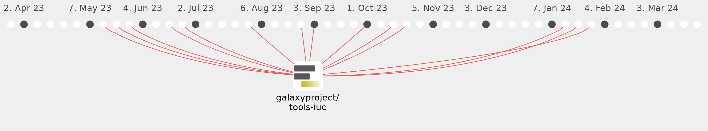

Galaxy Community Activities
pimarin
pimarin
https://github.com/pimarin
Commits all-time:
83
Commits last year:
35

galaxyproject/tools-iuc
(35)
02f2859
060f91b
ab149f7
e37bcf0
491b15f
76bd1e1
6f2069d
f6d40bf
665ebb6
487cb35
2b15fb3
e2c4ab5
accb0e4
3b2a82f
f2f2ea4
8146dca
44abfb8
58419e2
0d53631
378cdf1
9f10d81
67d45bd
75db652
939e957
902ccdb
dcb7816
db28714
43bf54b
0c2ed11
f19c3fa
bd0d7f1
2a8a85c
4ca4931
8fa1230
4c6ec7f